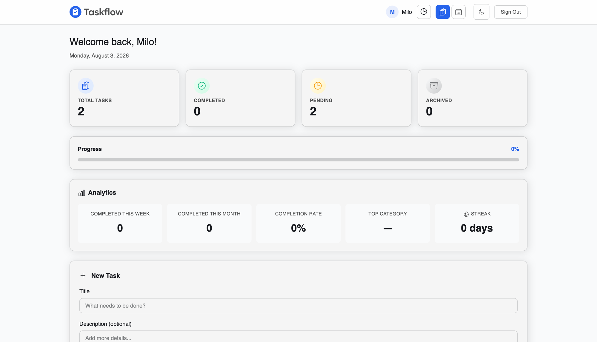

Project Overview
TaskFlow is a task management app for organizing daily work: create tasks with a priority, category, due date, and tags, break them into subtasks, track them in a list or a calendar view, and see a running feed of recent activity. It's a small product, but every layer of it is real — a REST API, a real database, and token-based auth — not a front-end mockup wired to fake data.
The Idea
I didn't set out to build "another to-do app." I set out to learn full-stack development properly — the part that doesn't show up in a portfolio screenshot: how a frontend actually talks to a server, how auth tokens get issued and verified, how a schema holds up once foreign keys and cascading deletes are involved. A task manager was the right size of problem: familiar enough that I could focus on the mechanics instead of the concept.
Planning
The data model connects
users, tasks, subtasks, and activity_log,
each task belonging to a user, each subtask belonging to a task, both with
ON DELETE CASCADE so deleting a task couldn't orphan rows elsewhere.
The schema also includes
teams, task_assignments, notifications,
task_attachments, and board_columns tables from early on, even
though none of them power a real feature yet. Planning the shape of "where this could go"
up front made it easy to add those tables later without a disruptive migration.
Design
The UI runs on a custom design-token system — M3-style color roles compiled to CSS
variables, paired with Inter and DM Sans — with a light/dark toggle that persists to
localStorage. The dashboard splits into a list view and a calendar view
behind a single toggle, since early on it was clear a flat list doesn't answer "what's
due this week" nearly as well as a calendar does.
Destructive actions — deleting a task, deleting a subtask — route through a shared
confirm-dialog component instead of a browser confirm(), so the delete flow
looks and behaves consistently everywhere it's used.
Development
The backend is Node.js and Express, with SQLite as the database via
better-sqlite3 — a synchronous driver, which keeps route handlers free of
the callback/promise overhead a lot of Node database libraries add for a single-file
database that doesn't need it. Auth is a standard JWT flow: bcryptjs hashes
passwords on register, and a small middleware verifies the token on every protected
route:
function authenticateToken(req, res, next) {
const authHeader = req.headers['authorization'];
const token = authHeader && authHeader.split(' ')[1];
if (!token) {
return res.status(401).json({ error: 'Access denied. No token provided.' });
}
try {
const decoded = jwt.verify(token, JWT_SECRET);
req.user = decoded;
next();
} catch (err) {
return res.status(403).json({ error: 'Invalid or expired token.' });
}
}
The frontend is vanilla JavaScript talking to that API over fetch, with the
JWT stored in localStorage and attached as a Bearer token on every request.
No framework — partly to keep the learning focused on the browser/server contract itself,
without a framework's data layer doing that work invisibly.
Challenges
Evolving the schema without a migration library was the trickiest part to get right.
Rather than adding one, every schema change is a plain ALTER TABLE statement
wrapped in its own try/catch, run on every server start — it fails silently
if the column already exists, and applies cleanly if it doesn't. It's not how a larger
production app should manage migrations, but for a single-file SQLite database it kept
schema evolution honest without pulling in tooling I'd have had to learn on top of
everything else.
Socket.IO is initialized and logs connections, but the notification logic remains a future feature. Matching socket connections to authenticated users is still unfinished.
Final Outcome
TaskFlow shipped as a deployed, working app: register, sign in, create and organize tasks with subtasks and priorities, switch between list and calendar views, and see a live activity feed of what changed and when.

Reflections
The goal was to learn full-stack development end to end, and the parts that actually taught me something were the ones that don't show up in a demo: designing cascading deletes correctly, deciding how to evolve a schema without extra tooling, and being honest with myself about which features were real versus scaffolded.
What I'd build next is already sitting in the codebase, unbuilt on purpose: team collaboration, task assignment, real notifications over the Socket.IO connection that's already live, file attachments, a Kanban board, and an unused AI-suggestions table. Planning that surface area early, even before I needed it, means adding each one later is a routes-and-UI problem, not a schema problem.